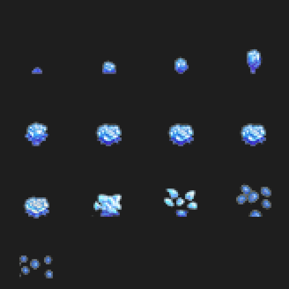
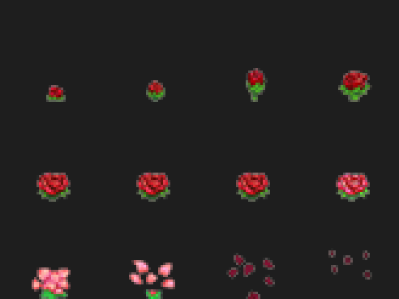
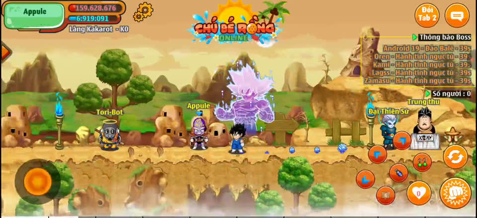
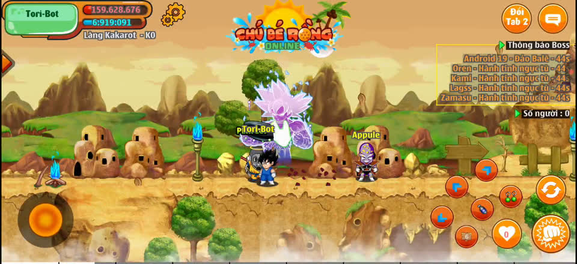

1. Kết quả phân tích tài nguyên
Gói effect_bong_hoa_hong.zip chứa sprite cho 2 hiệu ứng ở cả 4 độ phân giải (x1, x2, x3, x4)
| ID | Nội dung | Ảnh atlas (x1) | Frame | DataEffect |
|---|---|---|---|---|
369 | Bông hoa hồng đỏ nở dần rồi rơi cánh | 164×164 | 13 khung (41×41) | DataEffect_369 |
370 | Bông hoa xanh nở dần rồi rơi cánh | 164×123 | 12 khung (41×41) | DataEffect_370 |


Trong gói còn có 17708.png / 17709.png (icon 22×22) – icon sự kiện vật phẩm, không bắt buộc cho hiệu ứng này; SQL team2026 không có item template 17708/17709, nên không cần sửa SQL.
2. Đối chiếu video demo
Khi nhân vật di chuyển, hoa xuất hiện rải dọc đường đi,neo trong tọa độ bản đồ (không dính màn hình), mỗi bông tự nở rồi tàn dần. Video dùng cả hai hiệu ứng:


3. Kiến trúc source & điểm chèn
src.zip là source server Java (client không được cung cấp). Cửa sổ duy nhất toàn bộ thao tác di chuyển đi qua là PlayerService.playerMove(): client gửi message -7 (Controller) → server cập nhật tọa độ → broadcast -7 cho người khác. Hiệu ứng bản đồ gửi qua Message 113 của EffectMapService — client tự load ImgEffect_{id}.png+DataEffect_{id} theo độ phân giải.
Thiết kế chống spam & an toàn
- realMove: so sánh tọa độ cũ mới — đứng yên, packet lặp lại → không tạo hoa.
- largeMove > 300px: teleport / bùng packet khi lag → không tạo hoa.
- FLOWER_EFFECT_SPAWN_DELAY = 500ms/người: tối đa 2 hoa/giây, đúng nhịp video.
- Chỉ áp dụng
player.isPl()— boss, pet, bot di chuyển không sinh hoa. - Không sửa chiến đấu, kỹ năng, NPC, quái — chỉ chèn 1 lời gọi ở cuối playerMove.
4. Code đã vá (3 file)
File 1 — nro/models/player/Location.java (cùng vuốt thời gian tạo hoa với từng nhân vật)
public long lastTimeplayerMove;
public long lastTimeFlowerEffect;
}File 2 — nro/models/services_func/EffectMapService.java (hằng số cấu hình + 2 hàm mới)
// ========== Hiệu ứng hoa dưới chân nhân vật khi di chuyển ==========
public static final boolean FLOWER_EFFECT_ENABLED = true;
public static final long FLOWER_EFFECT_SPAWN_DELAY = 500L;
public static final int FLOWER_EFFECT_LAYER = 3;
public static final int FLOWER_EFFECT_LOOP = 1;
public static final int FLOWER_EFFECT_DELAY = -1;
public static final int FLOWER_EFFECT_ID_ROSE = 369;
public static final int FLOWER_EFFECT_ID_BLUE = 370;
public static final int FLOWER_EFFECT_ROSE_RATIO = 50;
public static final int FLOWER_EFFECT_X_OFFSET = 20;
public static final int FLOWER_EFFECT_Y_OFFSET = 34;
public void sendFlowerEffectOnMove(Player player) {
if (!FLOWER_EFFECT_ENABLED || player == null || player.zone == null || !player.isPl()) {
return;
}
if (!Util.canDoWithTime(player.location.lastTimeFlowerEffect, FLOWER_EFFECT_SPAWN_DELAY)) {
return;
}
player.location.lastTimeFlowerEffect = System.currentTimeMillis();
int effectId = Util.isTrue(FLOWER_EFFECT_ROSE_RATIO, 100)
? FLOWER_EFFECT_ID_ROSE : FLOWER_EFFECT_ID_BLUE;
int x = player.location.x - FLOWER_EFFECT_X_OFFSET;
int y = player.location.y - FLOWER_EFFECT_Y_OFFSET;
sendFlowerToAllInMap(player.zone, effectId, FLOWER_EFFECT_LAYER,
FLOWER_EFFECT_LOOP, x, y, FLOWER_EFFECT_DELAY);
}
public void sendFlowerToAllInMap(Zone zone, int id, int layer, int loop, int x, int y, int delay) {
Message msg = null;
try {
msg = new Message(113);
msg.writer().writeByte(loop);
msg.writer().writeByte(layer);
msg.writer().writeShort(id); // 369/370 > 255 nên cần short
msg.writer().writeShort(x);
msg.writer().writeShort(y);
msg.writer().writeShort(delay);
Service.gI().sendMessAllPlayerInMap(zone, msg);
} catch (Exception e) {
e.printStackTrace();
} finally {
if (msg != null) {
msg.cleanup();
}
}
}File 3 — nro/models/services/PlayerService.java (guard + hook tại playerMove)
public void playerMove(Player player, int x, int y) {
if (player.zone == null) {
return;
}
boolean realMove = x != player.location.x || y != player.location.y;
boolean largeMove = Math.abs(x - player.location.x) + Math.abs(y - player.location.y) > 300;
... // logic đổi map, pet, isFly... giữ nguyên
MapService.gI().sendPlayerMove(player);
if (realMove && !largeMove) {
EffectMapService.gI().sendFlowerEffectOnMove(player);
}
TaskService.gI().checkDoneTaskGoToMap(player, player.zone);
...
}
// thêm import:
// import nro.models.services_func.EffectMapService;5. Cấu hình & tài nguyên client
| Hằng số | Ý nghĩa | Điều chỉnh |
|---|---|---|
FLOWER_EFFECT_ENABLED | Bật/tắt toàn bộ hiệu ứng | false để tắt |
FLOWER_EFFECT_SPAWN_DELAY | chu kỳ tạo hoa (ms) — chống dày | tăng 700–1000 nếu muốn thưa hơn |
FLOWER_EFFECT_ROSE_RATIO | % chọn hoa hồng 369 (còn lại là 370) | 100 = chỉ hoa hồng |
FLOWER_EFFECT_LAYER | Lớp vẽ trên client | sửa nếu hoa che mất nhân vật |
FLOWER_EFFECT_X/Y_OFFSET | Căn tọa độ chân nhân vật | căn chỉnh nếu hoa lệch vị trí |
Đặt tài nguyên vào client
- Sao chép
ImgEffect_369.png,DataEffect_369,ImgEffect_370.png,DataEffect_370vào thư mục tài nguyên tương ứng độ phân giải của client:x1/,x2/,x3/,x4/(giữ đúng cấu trúc nơi đã cóImgEffect_…vàDataEffect_…hiện tại). - Chỉ cần ảnh + data cho đúng screen ratio (x1..x4) mà client đang hỗ trợ.
- Server không cần tài nguyên: chỉ gửi Message 113.
readShort() (vì 369/370 vượt giới hạn byte). Nếu client đọc byte, đổi writeShort(id) → writeByte(id) tại sendFlowerToAllInMap khi đã dè dặt phần tài nguyên dưới 255.6. Kiểm tra build (đã thực hiện thật)
- JDK:
javac 17.0.20.1, 560 file.java. - Baseline trước khi vá: 0 lỗi.
- Sau khi vá: 0 lỗi — đã verify bằng
javapcác hằngFLOWER_*và hàmsendFlowerEffectOnMove,sendFlowerToAllInMapđều có mặt trong bytecode. - Thư viện biên dịch: gson, HikariCP, lombok, json-simple, commons-lang, mysql-connector, slf4j (Maven Central).